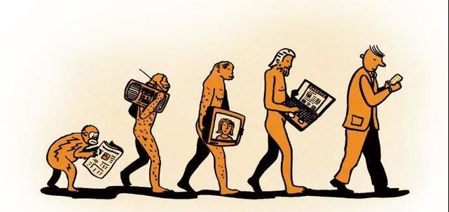
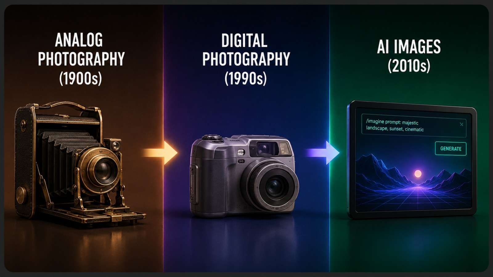

How Media Changed Over Time
From rewinding VHS tapes to instant streaming, from tuning into radio stations to curating personal playlists — every format we once relied on has been reimagined by digital technology.

Over the past few decades, the way we consume media has changed beyond recognition. From rewinding VHS tapes to instant streaming, from tuning into radio stations to curating personal playlists on Spotify, and from waiting for the morning newspaper to scrolling through live social media feeds — every format we once relied on has been reimagined by digital technology. Even photography evolved from darkrooms and film rolls to smartphone snapshots and AI-generated imagery. This page takes you through those defining transitions, showing how each shift not only changed the technology, but transformed our relationship with media itself.
Topics covered on this page:
- Home Video/Entertainment
- VHS
- DVD
- Streaming
- Audio/Music
- Radio
- MP3
- Spotify
- Information/News
- Newspapers
- Blogs
- Social Media
- Image/Photography
- Analog Photography
- Digital Photography
- AI Images
The media format evolution timelines:
Evolution of Home Video/Entertainment:

VHS (1970s) → DVD (1990s) → Blu-ray (2000s) → Streaming (2010s)
Key milestones in home video:
- VHS (1976) — First widely adopted home video format
- Allowed recording and playback at home
- Competed with Betamax in the format wars
- DVD (1996) — Digital quality leap over VHS
- Better image and audio quality
- No rewinding required
- Blu-ray (2006) — High-definition physical format
- Up to 1080p resolution
- Competed with HD DVD
- Streaming (2010s) — The dominant format today
- No physical media required
- Platforms like Netflix, Disney+, and YouTube
From VHS to Streaming — the home video evolution
| Characteristic | VHS | DVD | Streaming |
|---|---|---|---|
| Format | Physical tape | Optical disc | Digital / Online |
| Durability | Degrades over time | Resistant but can scratch | Does not degrade |
| Content Library | Limited titles | Wide selection in stores | Thousands of titles |
| Accessibility | Requires rewinding | Instant chapter access | Instant access anywhere |
| Video Quality | Low quality (240p) | Standard definition (480p) | Up to 4K HDR |
| Audio Quality | Mono / basic stereo | Dolby Digital surround | Dolby Atmos / lossless |
| Device Required | VHS player | DVD player | Any internet device |
| Cost | Buy or rent tape | Buy or rent disc | Monthly subscription |
| DVD was the transitional format between VHS and Streaming. | |||
Evolution of Audio/Music:

Radio (1920s) → Cassette Tapes (1960s) → CD (1980s) → MP3 (1990s) → Streaming (2000s)
Key milestones in audio:
- Radio (1920s) — The first mass media broadcast
- Reached millions of listeners simultaneously
- No user control over content
- Cassette Tapes (1960s) — First portable audio format
- Allowed users to record their own mixes
- Popularized the mixtape culture
- MP3 (1990s) — Digital compression changed everything
- Made music files small enough to share online
- Led to the rise of file sharing platforms
- Spotify (2008) — The streaming era begins
- Millions of songs available instantly
- AI-powered personalized recommendations
From Radio to Spotify — the audio evolution
| Characteristic | Radio | MP3 | Spotify |
|---|---|---|---|
| Format | Broadcast / Analog | Compressed digital file | Digital / Streaming |
| User Control | No control over songs | Full control over files | Full control / playlists |
| Availability | Live / real-time only | Stored locally, anytime | On-demand, 24/7 |
| Reach | Limited to broadcast range | Shareable worldwide | Global access |
| Personalization | No personalization | Manual selection only | AI-curated recommendations |
| Audio Quality | Varies by signal | Compressed (lossy) | High quality / lossless |
| Cost | Free (ad-supported) | Buy or download files | Free or subscription |
| Device Required | Radio receiver | MP3 player / computer | Any internet device |
| MP3 was the bridge that made music portable before streaming took over. | |||
Evolution of Image/Photography:

Analog Photography (1900s) → Digital Photography (1990s) → AI Images (2010s)
Key milestones in photography:
- Analog Photography (1900s) — Capturing the world on film
- Required chemical darkroom processing
- Limited number of shots per roll
- Digital Photography (1990s) — Instant capture and storage
- No film or darkroom required
- Democratized photography for everyday users
- AI Images (2020s) — Images generated from text
- Tools like DALL-E, Midjourney, and Stable Diffusion
- Raises questions about authenticity and copyright
From Film to AI — the photography evolution
| Characteristic | Analog Photography | Digital Photography | AI Images |
|---|---|---|---|
| Format | Film / Chemical process | Digital sensor / file | AI-generated / Digital |
| Quantity | Limited shots per roll | Thousands per memory card | Unlimited generation |
| Processing | Requires darkroom | Instant preview and edit | Instant generation |
| Reality | Captures real moments | Captures real moments | Can be entirely fictional |
| Cost | High cost per photo | Low cost per photo | Nearly free |
| Editing | Manual darkroom techniques | Software (Photoshop, Lightroom) | Prompt-based refinement |
| Skill Required | High — technical and artistic | Moderate — camera knowledge | Low — text prompt only |
| Device Required | Film camera + darkroom | Digital camera / smartphone | Any internet device |
| Digital photography democratized image-making before AI began generating images from text. | |||
Key Terms
Essential concepts to understand digital media evolution.
Streaming
Online delivery of audio or video content without needing a physical format.
On-demand media
Media that users can access whenever they choose instead of following a fixed schedule.
Digital photography
Photography that stores images as digital files instead of using film.
AI-generated image
An image created by artificial intelligence based on data, patterns or text prompts.